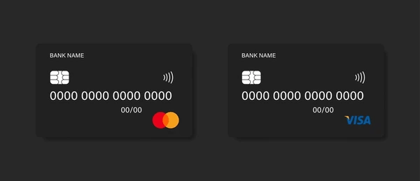

Bienvenido a VCCGenerator
Para comenzar, seleccione una de las pestañas arriba: Generador de Tarjetas para crear nuevas tarjetas virtuales, Validador de Tarjetas para verificar números existentes, o Advertencia para leer nuestras políticas de uso.
